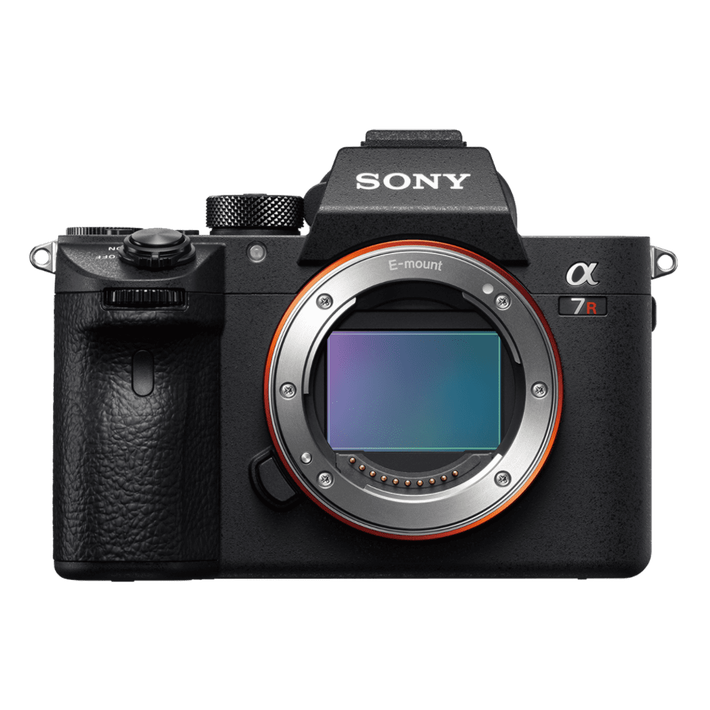
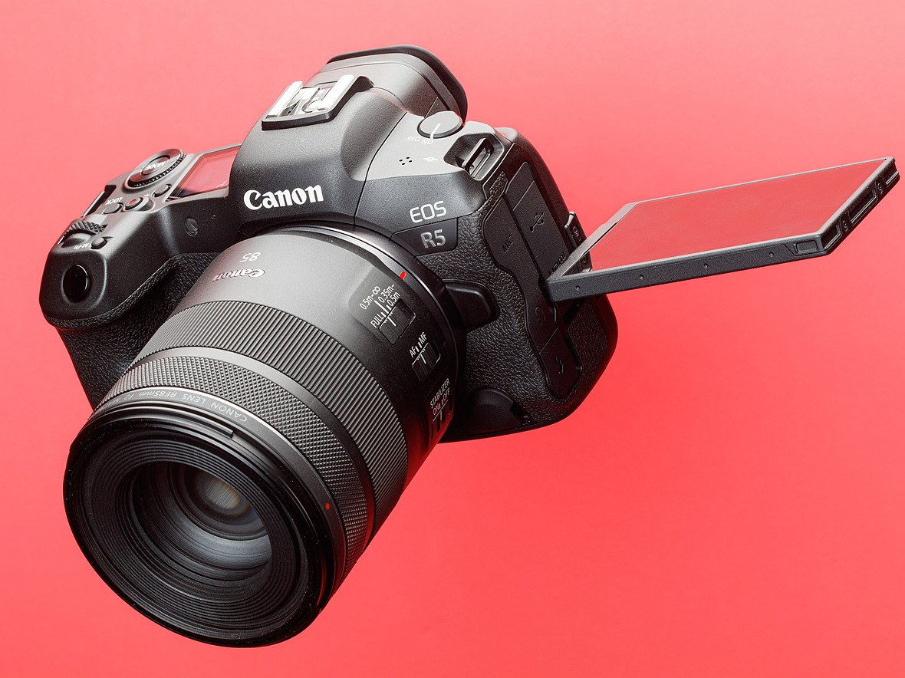
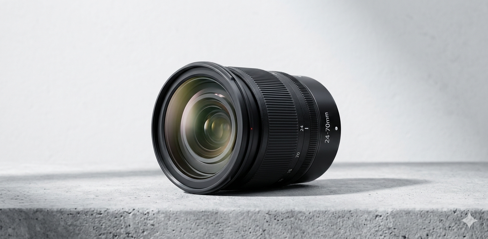
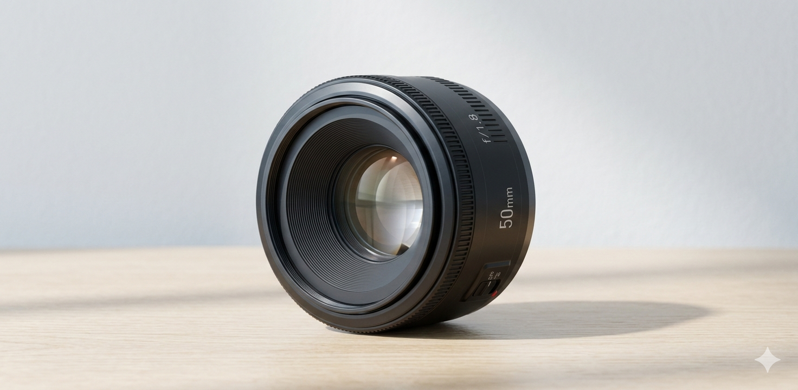

Catálogo Recomendado
Seleccionamos estos equipos basándonos en su rendimiento real en campo y su valor de reventa.
Cámaras por Especialidad

Para Paisajes
Recomendación: Sensores Full Frame de alta resolución.
¿Por qué? Permiten capturar un rango dinámico más amplio entre las sombras de las montañas y las luces del cielo.

Para Retratos
Recomendación: Cámaras con enfoque automático al ojo.
¿Por qué? Garantiza nitidez absoluta en la mirada del sujeto, incluso con aperturas muy grandes.
Lentes Imprescindibles

El 50mm f/1.8
Características: Gran apertura y nitidez.
¿Por qué? Es el lente más económico para lograr ese fondo desenfocado profesional que todos buscan.

Zoom 24-70mm
Características: Rango focal versátil.
¿Por qué? Ideal para viajes. Te permite pasar de una foto de arquitectura a un retrato sin cambiar de equipo.